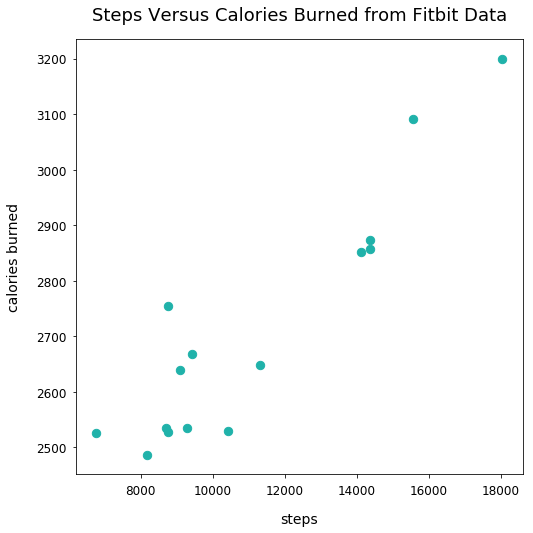

When to Use a Scatter Plot
- Jun 10 • 5 min read
- Key Terms: scatter plot
Scatter plots help visually illustrate the relationship between two or more variables of paired data samples.
What are paired samples? Think of them as two or more measurements for each observation. For example, you could measure the number of steps taken by someone in a day and the number of calories burned in a day. In that instance, the person is considered the observation. The data samples, as we'll call variables, are the quantitative measurements. In that instance, steps taken in one variable, and number of calories burned is another.
The data for the activity measurements recorded on a single day would look like this in a table:
| Observation | Daily Steps | Daily Calories Burned |
|---|---|---|
| Maddie | 7000 | 2800 |
| Jake | 8000 | 2900 |
| Stephanie | 9500 | 3100 |
On a 2-D plot, each point/dot in our scatter plot represents a single observation and it corresponding .
For the activity measurements instance, the x-axis can be the values for steps taken and the y-axis can be values for daily calories burned.
Below, I'll walk through several practical examples to illustrate the proper use of scatter plots.
Import Modules
import matplotlib.pyplot as plt
%matplotlib inline
Example: Steps Versus Calories Burned
Here is my actual Fitbit data of measurements of daily steps take and daily calories burned. I took 15 days' worth of data.
Record Fitbit Data in Python Lists
calories_burned = [3092, 2754, 2852, 2527, 3199, 2640, 2874, 2649,
2525, 2858, 2530, 2535, 2487, 2534, 2668]
steps = [15578, 8769, 14133, 8757, 18045, 9087, 14367, 11326, 6776,
14359, 10428, 9296, 8177, 8705, 9426]
Scatter Plot of Fitbit Data
plt.figure(figsize=(8, 8))
plt.scatter(steps, calories_burned, s=70, c='lightseagreen')
plt.title("Steps Versus Calories Burned from Fitbit Data", fontsize=18, y=1.03)
plt.xlabel("steps", fontsize=14, labelpad=15)
plt.ylabel("calories burned", fontsize=14, labelpad=15)
plt.tick_params(labelsize=12, pad=6);

Explanation of Fitbit Data
Generally, the more steps taken on a single day, the more calories that were likely burned.
Example: Height Versus Mass
I took measurements from 15 of my friends on their height (inches) and mass (pounds).
A sample of data collected in a table is:
| Observation | Height (inches) | Mass (pounds) |
|---|---|---|
| Ed | 68 | 130 |
| Matt | 73 | 170 |
| Lauren | 63 | 125 |
Record Physical Trait Data in Python Lists
height_inches = [68, 73, 63, 63, 72, 79, 58, 73, 70, 72, 68, 56, 70, 68, 70]
mass_pounds = [130, 170, 125, 119, 165, 185, 115, 192, 195, 210, 143, 140, 190, 182, 173]
Scatter Plot of Physical Trait Data
plt.figure(figsize=(8, 8))
plt.scatter(height_inches, mass_pounds, s=70, c='sandybrown')
plt.title("Height Versus Mass of My Friends", fontsize=18, y=1.03)
plt.xlabel("Height (inches)", fontsize=14, labelpad=15)
plt.ylabel("Mass (pounds)", fontsize=14, labelpad=15)
plt.tick_params(labelsize=12, pad=6);

Explanation of Physical Trait Plot
Generally, an increase in height leads to an increase in mass.
Example: Minutes Played Versus Turnovers for Lebron James
Below is actual data from a sample of games played by Lebron James in the regular season of 2017-2018. In each game, Lebron was recorded to play a number of minutes and had recorded turnovers (lost possession of the ball to the other team).
A sample of data in a table would look like:
| Game Date | Play time (minutes) | Turnovers |
|---|---|---|
| 3/30/2018 | 42 | 1 |
| 3/21/2018 | 39 | 0 |
| 3/19/2018 | 40 | 6 |
Record Data in Python Lists
play_time_minutes = [42, 39, 40, 40, 31, 39, 29, 41, 39, 37, 48, 38, 38, 40, 38, 32, 27, 33, 41]
turnovers = [1, 0, 6, 6, 2, 5, 3, 6, 3, 3, 5, 7, 4, 11, 2, 2, 3, 4, 7]
Plot Lebron's Minutes Versus Turnover Data
plt.figure(figsize=(8, 8))
plt.scatter(play_time_minutes, turnovers, s=70, c='darkred')
plt.title("Play Time Versus Turnovers for Lebron in 2017-2018 Season Games", fontsize=15, y=1.015)
plt.xlabel("Play Time (minutes)", fontsize=14, labelpad=15)
plt.ylabel("Turnovers", fontsize=13, labelpad=15)
plt.tick_params(labelsize=12, pad=6);

Explanation of Lebron's NBA Data Plot
There isn't a clear relationship between minutes played for Lebron and the number of turnovers in games.